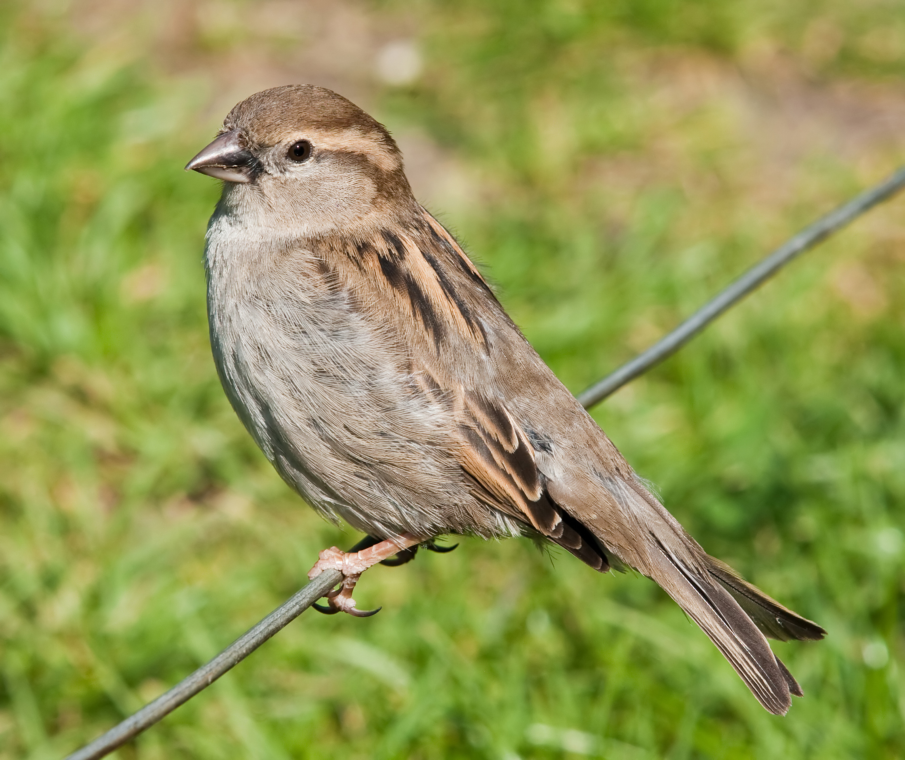
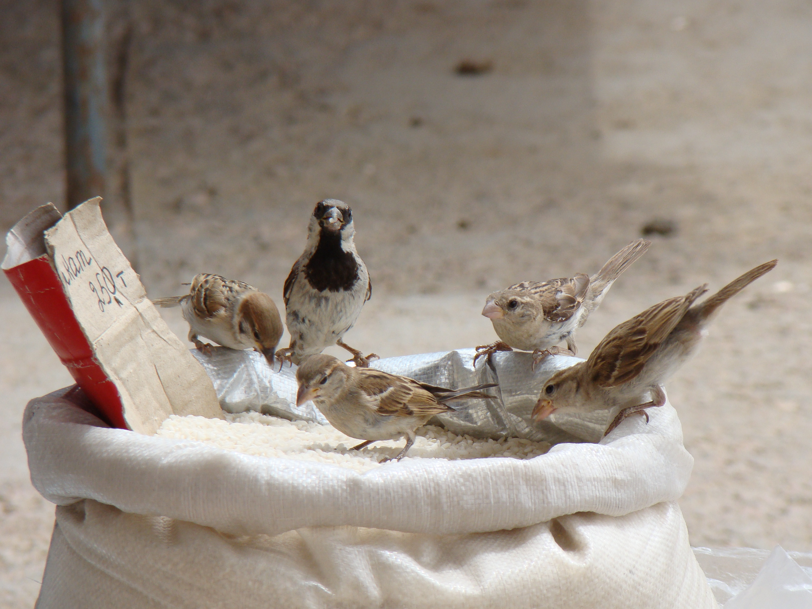
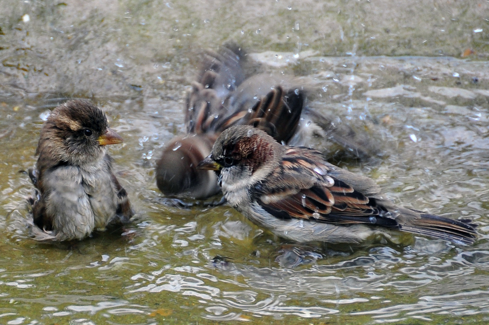
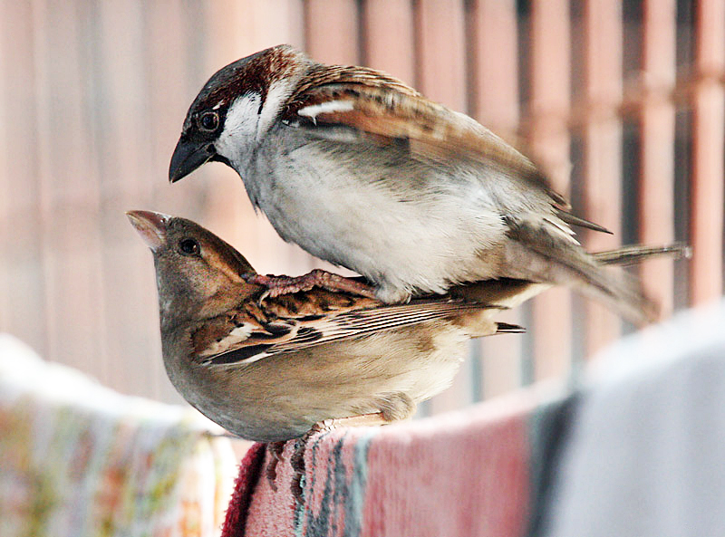
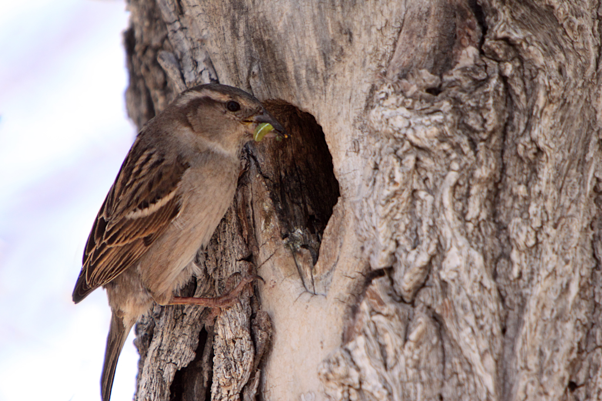
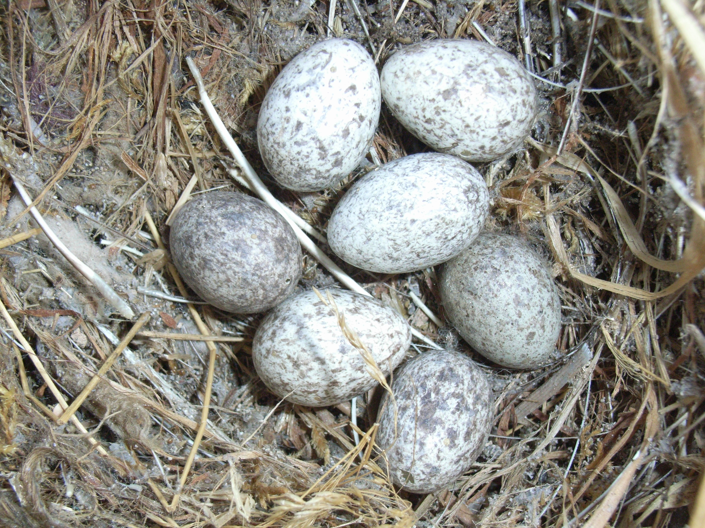
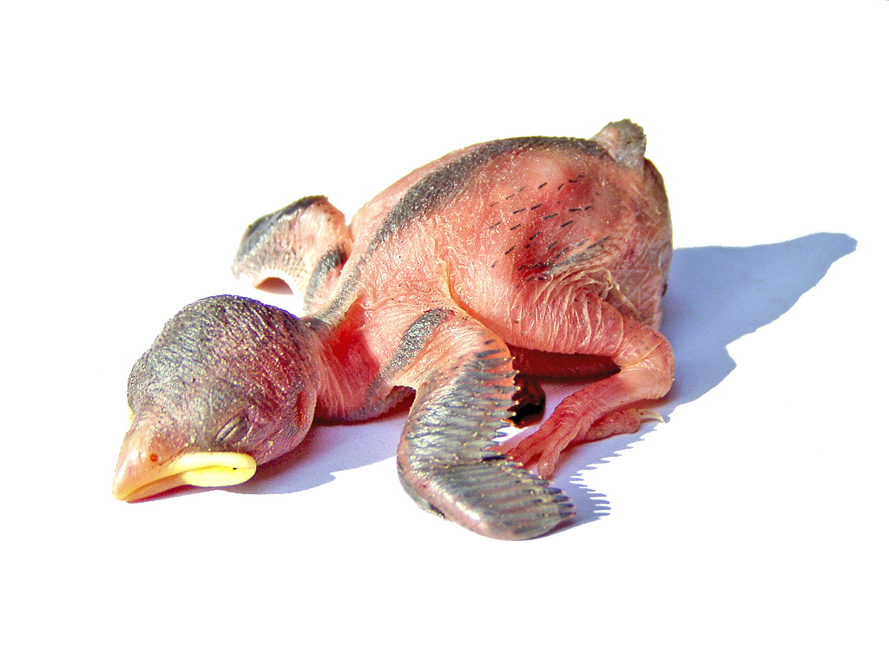

sparrow
The house sparrow (Passer domesticus) is a bird of the sparrow family Passeridae, found in most parts of the world. It is a small bird that has a typical length of 16 cm (6.3 in) and a mass of 24–39.5 g (0.85–1.39 oz). Females and young birds are coloured pale brown and grey, and males have brighter black, white, and brown markings. One of about 25 species in the genus Passer, the house sparrow is native to most of Europe, the Mediterranean Basin, and a large part of Asia. Its intentional or accidental introductions to many regions, including parts of Australasia, Africa, and the Americas, make it the most widely distributed wild bird.
The house sparrow is strongly associated with human habitation, and can live in urban or rural settings. Though found in widely varied habitats and climates, it typically avoids extensive woodlands, grasslands, and deserts away from human development. It feeds mostly on the seeds of grains and weeds, but it is an opportunistic eater and commonly eats insects and many other foods. Its predators include domestic cats, hawks, and many other predatory birds and mammals.
Because of its numbers, ubiquity, and association with human settlements, the house sparrow is culturally prominent. It is extensively, and usually unsuccessfully, persecuted as an agricultural pest. It has also often been kept as a pet, as well as being a food item and a symbol of lust, sexual potency, commonness, and vulgarity. Though it is widespread and abundant, its numbers have declined in some areas. The animal's conservation status is listed as least concern on the IUCN Red List.
Male sparrow

Female sparrow
Description
Measurements and shape
The house sparrow is typically about 16 cm (6.3 in) long, ranging from 14 to 18 cm (5.5 to 7.1 in). The house sparrow is a compact bird with a full chest and a large, rounded head. Its bill is stout and conical with a culmen length of 1.1–1.5 cm (0.43–0.59 in), strongly built as an adaptation for eating seeds. Its tail is short, at 5.2–6.5 cm (2.0–2.6 in) long. The wing chord is 6.7–8.9 cm (2.6–3.5 in), and the tarsus is 1.6–2.5 cm (0.63–0.98 in). Wingspan ranges from 19–25 centimetres (7.5–9.8 in).
In mass, the house sparrow ranges from 24 to 39.5 g (0.85 to 1.39 oz). Females usually are slightly smaller than males. The median mass on the European continent for both sexes is about 30 g (1.1 oz), and in more southerly subspecies is around 26 g (0.92 oz). Younger birds are smaller, males are larger during the winter, and females are larger during the breeding season. Birds at higher latitudes, colder climates, and sometimes higher altitudes are larger (under Bergmann's rule), both between and within subspecies.
Plumage
The plumage of the house sparrow is mostly different shades of grey and brown. The sexes exhibit strong dimorphism: the female is mostly buffish above and below, while the male has boldly coloured head markings, a reddish back, and grey underparts. The male has a dark grey crown from the top of its bill to its back, and chestnut brown flanking its crown on the sides of its head. It has black around its bill, on its throat, and on the spaces between its bill and eyes (lores). It has a small white stripe between the lores and crown and small white spots immediately behind the eyes (postoculars), with black patches below and above them. The underparts are pale grey or white, as are the cheeks, ear coverts, and stripes at the base of the head. The upper back and mantle are a warm brown, with broad black streaks, while the lower back, rump and upper tail coverts are greyish brown.
The male is duller in fresh nonbreeding plumage, with whitish tips on many feathers. Wear and preening expose many of the bright brown and black markings, including most of the black throat and chest patch, called the "bib" or "badge". The badge is variable in width and general size, and may signal social status or fitness. This hypothesis has led to a "veritable 'cottage industry'" of studies, which have only conclusively shown that patches increase in size with age. The male's bill is dark grey, but black in the breeding season.
The female has no black markings or grey crown. Its upperparts and head are brown with darker streaks around the mantle and a distinct pale supercilium. Its underparts are pale grey-brown. The female's bill is brownish-grey and becomes darker in breeding plumage approaching the black of the male's bill.
Juveniles are similar to the adult female, but deeper brown below and paler above, with paler and less defined supercilia. Juveniles have broader buff feather edges, and tend to have looser, scruffier plumage, like moulting adults. Juvenile males tend to have darker throats and white postoculars like adult males, while juvenile females tend to have white throats. However, juveniles cannot be reliably sexed by plumage: some juvenile males lack any markings of the adult male, and some juvenile females have male features. The bills of young birds are light yellow to straw, paler than the female's bill. Immature males have paler versions of the adult male's markings, which can be very indistinct in fresh plumage. By their first breeding season, young birds generally are indistinguishable from other adults, though they may still be paler during their first year.
Voice
Most house sparrow vocalisations are variations on its short and frequent chirping call. Transcribed as chirrup, tschilp, or philip, this note is made as a contact call by flocking or resting birds; or by males to proclaim nest ownership and invite pairing. In the breeding season, the male gives this call repetitively, with emphasis and speed, but not much rhythm, forming what is described either as a song or an "ecstatic call" similar to a song. Young birds also give a true song, especially in captivity, a warbling similar to that of the European greenfinch
Aggressive males give a trilled version of their call, transcribed as "chur-chur-r-r-it-it-it-it". This call is also used by females in the breeding season, to establish dominance over males while displacing them to feed young or incubate eggs. House sparrows give a nasal alarm call, the basic sound of which is transcribed as quer, and a shrill chree call in great distress. Another vocalisation is the "appeasement call", a soft quee given to inhibit aggression, usually given between birds of a mated pair.[16] These vocalisations are not unique to the house sparrow, but are shared, with small variations, by all sparrows.
Variation
Some variation is seen in the 12 subspecies of house sparrows, which are divided into two groups, the Oriental P. d. indicus group, and the Palaearctic P. d. domesticus group. Birds of the P. d. domesticus group have grey cheeks, while P. d. indicus group birds have white cheeks, as well as bright colouration on the crown, a smaller bill, and a longer black bib. The subspecies P. d. tingitanus differs little from the nominate subspecies, except in the worn breeding plumage of the male, in which the head is speckled with black and underparts are paler. P. d. balearoibericus is slightly paler than the nominate, but darker than P. d. bibilicus. P. d. bibilicus is paler than most subspecies, but has the grey cheeks of P. d. domesticus group birds. The similar P. d. persicus is paler and smaller, and P. d. niloticus is nearly identical but smaller. Of the less widespread P. d. indicus group subspecies, P. d. hyrcanus is larger than P. d. indicus, P. d. hufufae is paler, P. d. bactrianus is larger and paler, and P. d. parkini is larger and darker with more black on the breast than any other subspecies.
Identification
The house sparrow can be confused with a number of other seed-eating birds, especially its relatives in the genus Passer. Many of these relatives are smaller, with an appearance that is neater or "cuter", as with the Dead Sea sparrow. The dull-coloured female can often not be distinguished from other females, and is nearly identical to those of the Spanish and Italian sparrows. The Eurasian tree sparrow is smaller and slenderer with a chestnut crown and a black patch on each cheek. The male Spanish sparrow and Italian sparrow are distinguished by their chestnut crowns. The Sind sparrow is very similar but smaller, with less black on the male's throat and a distinct pale supercilium on the female.
Taxonomy and systematics
Names
The house sparrow was among the first animals to be given a scientific name in the modern system of biological classification, since it was described by Carl Linnaeus, in the 1758 10th edition of Systema Naturae. It was described from a type specimen collected in Sweden, with the name Fringilla domestica. Later, the genus name Fringilla came to be used only for the common chaffinch and its relatives, and the house sparrow has usually been placed in the genus Passer created by French zoologist Mathurin Jacques Brisson in 1760.
The bird's scientific name and its usual English name have the same meaning. The Latin word passer, like the English word "sparrow", is a term for small active birds, coming from a root word referring to speed. The Latin word domesticus means "belonging to the house", like the common name a reference to its association with humans. The house sparrow is also called by a number of alternative English names, including English sparrow, chiefly in North America; and Indian sparrow or Indian house sparrow, for the birds of the Indian subcontinent and Central Asia. Dialectal names include sparr, sparrer, spadger, spadgick, and philip, mainly in southern England; spug and spuggy, mainly in northern England; spur and sprig, mainly in Scotland; and spatzie or spotsie, from the German Spatz, in North America.
Taxonomy
The genus Passer contains about 25 species, depending on the authority, 26 according to the Handbook of the Birds of the World. Most Passer species are dull-coloured birds with short, square tails and stubby, conical beaks, between 11 and 18 cm (4.3 and 7.1 in) long. Mitochondrial DNA studies suggest that speciation in the genus occurred during the Pleistocene and earlier, while other evidence suggests speciation occurred 25,000 to 15,000 years ago.Within Passer, the house sparrow is part of the "Palaearctic black-bibbed sparrows" group and a close relative of the Mediterranean "willow sparrows".
The taxonomy of the house sparrow and its Mediterranean relatives is complicated. The common type of "willow sparrow" is the Spanish sparrow, which resembles the house sparrow in many respects. It frequently prefers wetter habitats than the house sparrow, and it is often colonial and nomadic. In most of the Mediterranean, one or both species occur, with some degree of hybridisation. In North Africa, the two species hybridise extensively, forming highly variable mixed populations with a full range of characters from pure house sparrows to pure Spanish sparrows.
Subspecies
A large number of subspecies have been named, of which 12 were recognised in the Handbook of the Birds of the World. These subspecies are divided into two groups, the Palaearctic P. d. domesticus group, and the Oriental P. d. indicus group. Several Middle Eastern subspecies, including P. d. biblicus, are sometimes considered a third, intermediate group. The subspecies P. d. indicus was described as a species, and was considered to be distinct by many ornithologists during the 19th century.
Migratory birds of the subspecies P. d. bactrianus in the P. d. indicus group were recorded overlapping with P. d. domesticus birds without hybridising in the 1970s, so the Soviet scientists Edward I. Gavrilov and M. N. Korelov proposed the separation of the P. d. indicus group as a separate species. However, P. d. indicus group and P. d. domesticus group birds intergrade in a large part of Iran, so this split is rarely recognised.
In North America, house sparrow populations are more differentiated than those in Europe. This variation follows predictable patterns, with birds at higher latitudes being larger and darker and those in arid areas being smaller and paler. However, how much this is caused by evolution or by environment is not clear. Similar observations have been made in New Zealand and in South Africa. The introduced house sparrow populations may be distinct enough to merit subspecies status, especially in North America and southern Africa, and American ornithologist Harry Church Oberholser even gave the subspecies name P. d. plecticus to the paler birds of western North America.
Distribution and habitat
The house sparrow originated in the Middle East and spread, along with agriculture, to most of Eurasia and parts of North Africa.[68] Since the mid-19th century, it has reached most of the world, chiefly due to deliberate introductions, but also through natural and shipborne dispersal. Its introduced range encompasses most of North America (including Bermuda), Central America, southern South America, southern Africa, part of West Africa, Australia, New Zealand, and islands throughout the world. It has greatly extended its range in northern Eurasia since the 1850s, and continues to do so, as was shown by its colonisation around 1990 of Iceland and Rishiri Island, Japan. The extent of its range makes it the most widely distributed wild bird on the planet.
Introduction
The house sparrow has become highly successful in most parts of the world where it has been introduced. This is mostly due to its early adaptation to living with humans, and its adaptability to a wide range of conditions. Other factors may include its robust immune response, compared to the Eurasian tree sparrow. Where introduced, it can extend its range quickly, sometimes at a rate over 230 km (140 mi) per year. In many parts of the world, it has been characterised as a pest, and poses a threat to native birds. A few introductions have died out or been of limited success, such as those to Greenland and Cape Verde.
The first of many successful introductions to North America occurred when birds from England were released in New York City, in 1852, intended to control the ravages of the linden moth. In North America, the house sparrow now occurs from the Northwest Territories of Canada to southern Panama, and it is one of the most abundant birds of the continent. The house sparrow was first introduced to Australia in 1863 at Melbourne and is common throughout the eastern part of the continent as far north as Cape York, but has been prevented from establishing itself in Western Australia, where every house sparrow found in the state is killed. House sparrows were introduced in New Zealand in 1859, and from there reached many of the Pacific islands, including Hawaii.
In southern Africa, birds of both the European subspecies (P. d. domesticus) and the Indian subspecies (P. d. indicus) were introduced around 1900. Birds of P. d. domesticus ancestry are confined to a few towns, while P. d. indicus birds have spread rapidly, reaching Tanzania in the 1980s. Despite this rapid spread, native relatives such as the Cape sparrow also occur and thrive in urban habitats. In South America, it was first introduced near Buenos Aires around 1870, and quickly became common in most of the southern part of the continent. It now occurs almost continuously from Tierra del Fuego to the fringes of the Amazon basin, with isolated populations as far north as coastal Venezuela.
Habitat
The house sparrow is closely associated with human habitation and cultivation. It is not an obligate commensal of humans as some have suggested: birds of the migratory Central Asian subspecies usually breed away from humans in open country, and birds elsewhere are occasionally found away from humans. The only terrestrial habitats that the house sparrow does not inhabit are dense forest and tundra. Well adapted to living around humans, it frequently lives and even breeds indoors, especially in factories, warehouses, and zoos. It has been recorded breeding in an English coal mine 640 m (2,100 ft) below ground, and feeding on the Empire State Building's observation deck at night. It reaches its greatest densities in urban centres, but its reproductive success is greater in suburbs, where insects are more abundant. On a larger scale, it is most abundant in wheat-growing areas such as the Midwestern United States.
It tolerates a variety of climates, but prefers drier conditions, especially in moist tropical climates. It has several adaptations to dry areas, including a high salt tolerance and an ability to survive without water by ingesting berries. In most of eastern Asia, the house sparrow is entirely absent, replaced by the Eurasian tree sparrow. Where these two species overlap, the house sparrow is usually more common than the Eurasian tree sparrow, but one species may replace the other in a manner that ornithologist Maud Doria Haviland described as "random, or even capricious". In most of its range, the house sparrow is extremely common, despite some declines, but in marginal habitats such as rainforest or mountain ranges, its distribution can be spotty.
Behaviour
Social behaviour
The house sparrow is a very social bird. It is gregarious during all seasons when feeding, often forming flocks with other species of birds. It roosts communally and while breeding nests are usually grouped together in clumps. House sparrows also engage in social activities such as dust or water bathing and "social singing", in which birds call together in bushes. The house sparrow feeds mostly on the ground, but it flocks in trees and bushes. At feeding stations and nests, female house sparrows are dominant despite their smaller size, and they can fight over males in the breeding season
Sleep and roosting
House sparrows sleep with the bill tucked underneath the scapular feathers. Outside of the reproductive season, they often roost communally in trees or shrubs. Much communal chirping occurs before and after the birds settle in the roost in the evening, as well as before the birds leave the roost in the morning. Some congregating sites separate from the roost may be visited by the birds prior to settling in for the night.
Body maintenance
Dust or water bathing is common and often occurs in groups. Anting is rare. Head scratching is done with the leg over the drooped wing.
Feeding
As an adult, the house sparrow mostly feeds on the seeds of grains and weeds, but it is opportunistic and adaptable, and eats whatever foods are available. In towns and cities, it often scavenges for food in garbage containers and congregates in the outdoors of restaurants and other eating establishments to feed on leftover food and crumbs. It can perform complex tasks to obtain food, such as opening automatic doors to enter supermarkets,clinging to hotel walls to watch vacationers on their balconies, and nectar robbing kowhai flowers. In common with many other birds, the house sparrow requires grit to digest the harder items in its diet. Grit can be either stone, often grains of masonry, or the shells of eggs or snails; oblong and rough grains are preferred.
Several studies of the house sparrow in temperate agricultural areas have found the proportion of seeds in its diet to be about 90%. It will eat almost any seeds, but where it has a choice, it prefers corn: oats, wheat or maize.[118] Rural birds tend to eat more waste seed from animal dung and seed from fields. In urban areas, the house sparrow feeds largely on food provided directly or indirectly by humans, such as bread, though it prefers raw seeds. The house sparrow also eats some plant matter besides seeds, including buds, berries, and fruits such as grapes and cherries. In temperate areas, the house sparrow has an unusual habit of tearing flowers, especially yellow ones, in the spring.

Animals form another important part of the house sparrow's diet, chiefly insects, of which beetles, caterpillars, dipteran flies, and aphids are especially important. Various noninsect arthropods are eaten, as are molluscs and crustaceans where available, earthworms, and even vertebrates such as lizards and frogs. Young house sparrows are fed mostly on insects until about 15 days after hatching. They are also given small quantities of seeds, spiders, and grit. In most places, grasshoppers and crickets are the most abundant foods of nestlings. True bugs, ants, sawflies, and beetles are also important, but house sparrows take advantage of whatever foods are abundant to feed their young. House sparrows have been observed stealing prey from other birds, including American robins.
The gut microbiota of house sparrows differs between chicks and adults, with Pseudomonadota (formerly Proteobacteria) decreasing in chicks when they get to around 9 days old, whilst the relative abundance of Bacillota increase.
Locomotion
The house sparrow's flight is direct (not undulating) and flapping, averaging 45.5 km/h (28.3 mph) and about 15 wingbeats per second.[108][127] On the ground, the house sparrow typically hops rather than walks. It can swim when pressed to do so by pursuit from predators. Captive birds have been recorded diving and swimming short distances under water.
Dispersal and migration
Most house sparrows do not move more than a few kilometres during their lifetimes. However, limited migration occurs in all regions. Some young birds disperse long distances, especially on coasts, and mountain birds move to lower elevations in winter. Two subspecies, P. d. bactrianus and P. d. parkini, are predominantly migratory. Unlike the birds in sedentary populations that migrate, birds of migratory subspecies prepare for migration by putting on weight.
Breeding
House sparrows can breed in the breeding season immediately following their hatching, and sometimes attempt to do so. Some birds breeding for the first time in tropical areas are only a few months old and still have juvenile plumage. Birds breeding for the first time are rarely successful in raising young, and reproductive success increases with age, as older birds breed earlier in the breeding season, and fledge more young. As the breeding season approaches, hormone releases trigger enormous increases in the size of the sexual organs and changes in day length lead males to start calling by nesting sites. The timing of mating and egg-laying varies geographically, and between specific locations and years because a sufficient supply of insects is needed for egg formation and feeding nestlings.
Males take up nesting sites before the breeding season, by frequently calling beside them. Unmated males start nest construction and call particularly frequently to attract females. When a female approaches a male during this period, the male displays by moving up and down while drooping and shivering his wings, pushing up his head, raising and spreading his tail, and showing his bib. Males may try to mate with females while calling or displaying. In response, a female will adopt a threatening posture and attack a male before flying away, pursued by the male. The male displays in front of her, attracting other males, which also pursue and display to the female. This group display usually does not immediately result in copulations. Other males usually do not copulate with the female. Copulation is typically initiated by the female giving a soft dee-dee-dee call to the male. Birds of a pair copulate frequently until the female is laying eggs, and the male mounts the female repeatedly each time a pair mates.
The house sparrow is monogamous, and typically mates for life, but birds from pairs often engage in extra-pair copulations, so about 15% of house sparrow fledglings are unrelated to their mother's mate. Males guard their mates carefully to avoid being cuckolded, and most extra-pair copulation occurs away from nest sites. Males may sometimes have multiple mates, and bigamy is mostly limited by aggression between females. Many birds do not find a nest and a mate, and instead may serve as helpers around the nest for mated pairs, a role which increases the chances of being chosen to replace a lost mate. Lost mates of both sexes can be replaced quickly during the breeding season. The formation of a pair and the bond between the two birds is tied to the holding of a nest site, though paired house sparrows can recognise each other away from the nest.
Nesting
Nest sites are varied, though cavities are preferred. Nests are most frequently built in the eaves and other crevices of houses. Holes in cliffs and banks, and tree hollows, are also used. A sparrow sometimes excavates its own nests in sandy banks or rotten branches, but more frequently uses the nests of other birds such as those of swallows in banks and cliffs, and old tree cavity nests. It usually uses deserted nests, though sometimes it usurps active ones by driving away or killing the occupants. Tree hollows are more commonly used in North America than in Europe, putting the sparrows in competition with bluebirds and other North American cavity nesters, and thereby contributing to their population declines.
Especially in warmer areas, the house sparrow may build its nests in the open, on the branches of trees, especially evergreens and hawthorns, or in the nests of large birds such as storks or magpies. In open nesting sites, breeding success tends to be lower, since breeding begins late and the nest can easily be destroyed or damaged by storms. Less common nesting sites include street lights and neon signs, favoured for their warmth; and the old open-topped nests of other songbirds, which are then domed over. Usually the couples repeat copulation many times. Every copulation is followed by some break of 3 to 4 seconds, and in that time both pair change their position by some distance. The nest is usually domed, though it may lack a roof in enclosed sites. It has an outer layer of stems and roots, a middle layer of dead grass and leaves, and a lining of feathers, as well as of paper and other soft materials. Nests typically have external dimensions of 20 × 30 cm (8 × 12 in), but their size varies greatly. The building of the nest is initiated by the unmated male while displaying to females. The female assists in building, but is less active than the male. Some nest building occurs throughout the year, especially after moult in autumn. In colder areas house sparrows build specially created roost nests, or roost in street lights, to avoid losing heat during the winter. House sparrows do not hold territories, but they defend their nests aggressively against intruders of the same sex.
Eggs and young
Clutches usually comprise four or five eggs, though numbers from one to 10 have been recorded. At least two clutches are usually laid, and up to seven a year may be laid in the tropics or four a year in temperate latitudes. When fewer clutches are laid in a year, especially at higher latitudes, the number of eggs per clutch is greater. Central Asian house sparrows, which migrate and have only one clutch a year, average 6.5 eggs in a clutch. Clutch size is also affected by environmental and seasonal conditions, female age, and breeding density.
 Some intraspecific brood parasitism occurs, and instances of unusually large numbers of eggs in a nest may be the result of females laying eggs in the nests of their neighbours. Such foreign eggs are sometimes recognised and ejected by females. The house sparrow is a victim of interspecific brood parasites, but only rarely, since it usually uses nests in holes too small for parasites to enter, and it feeds its young foods unsuitable for young parasites. In turn, the house sparrow has once been recorded as a brood parasite of the American cliff swallow.
A juvenile, showing its pink bill and obvious nestling gape—the soft, swollen base, which becomes harder and less swollen as the bird matures
The eggs are white, bluish white, or greenish white, spotted with brown or grey.[108] Subelliptical in shape,[8] they range from 20 to 22 mm (0.79 to 0.87 in) in length and 14 to 16 mm (0.55 to 0.63 in) in width,[4] have an average mass of 2.9 g (0.10 oz), and an average surface area of 9.18 cm2 (1.423 in2). Eggs from the tropical subspecies are distinctly smaller. Eggs begin to develop with the deposition of yolk in the ovary a few days before ovulation. In the day between ovulation and laying, egg white forms, followed by eggshell. Eggs laid later in a clutch are larger, as are those laid by larger females, and egg size is hereditary. Eggs decrease slightly in size from laying to hatching. The yolk comprises 25% of the egg, the egg white 68%, and the shell 7%. Eggs are watery, being 79% liquid, and otherwise mostly protein.
The female develops a brood patch of bare skin and plays the main part in incubating the eggs. The male helps, but can only cover the eggs rather than truly incubate them. The female spends the night incubating during this period, while the male roosts near the nest. Eggs hatch at the same time, after a short incubation period lasting 11–14 days, and exceptionally for as many as 17 or as few as 9. The length of the incubation period decreases as ambient temperature increases later in the breeding season.
Relationships with humans
The house sparrow is closely associated with humans. They are believed to have become associated with humans around 10,000 years ago. The Turkestan subspecies (P. d. bactrianus) is least associated with humans and considered to be evolutionarily closer to the ancestral noncommensal populations.[198] Usually, the house sparrow is regarded as a pest, since it consumes agricultural products and spreads disease to humans and their domestic animals. Even birdwatchers often hold it in little regard because of its molestation of other birds. In most of the world, the house sparrow is not protected by law. Attempts to control house sparrows include the trapping, poisoning, or shooting of adults; the destruction of their nests and eggs; or less directly, blocking nest holes and scaring off sparrows with noise, glue, or porcupine wire. However, the house sparrow can be beneficial to humans, as well, especially by eating insect pests, and attempts at the large-scale control of the house sparrow have failed.
The house sparrow has long been used as a food item. From around 1560 to at least the 19th century in northern Europe, earthenware "sparrow pots" were hung from eaves to attract nesting birds so the young could be readily harvested. Wild birds were trapped in nets in large numbers, and sparrow pie was a traditional dish, thought, because of the association of sparrows with lechery, to have aphrodisiac properties. A traditional Indian medicine, Ciṭṭukkuruvi lēkiyam in Tamil, was sold with similar aphrodisiac claims. Sparrows were also trapped as food for falconers' birds and zoo animals. During the 1870s, there were debates on the damaging effects of sparrows in the House of Commons in England. In the early part of the 20th century, sparrow clubs culled many millions of birds and eggs in an attempt to control numbers of this perceived pest, but with only a localised impact on numbers. House sparrows have been kept as pets at many times in history, though they have no bright plumage or attractive songs, and raising them is difficult. The house sparrow has an extremely large range and population, so it is assessed as least concern for conservation on the IUCN Red List.